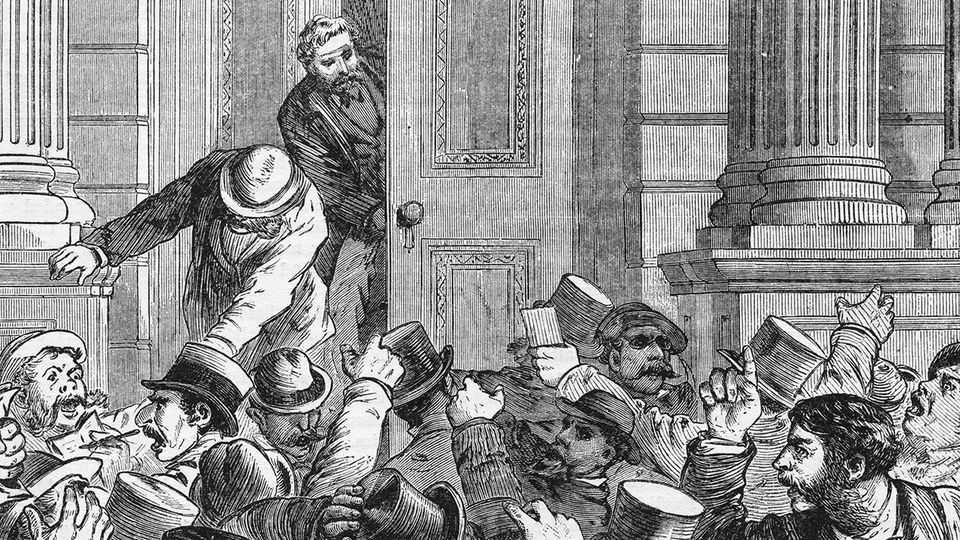

Why the market for histories of depressions is red hot
“1873”, a new book, offers some lessons for the AI craze
June 25th 2026

Liaquat Ahamed, an American author, has excellent timing. His first book, “Lords of Finance”, charted how blundering central bankers plunged the world into a depression after the Wall Street crash of 1929. It was published in 2009, when crises were on policymakers’ minds and lips.
His new book also catches the moment. Rocketing share prices have made some investors feel torn between giddy enthusiasm about AI and fear that the boom will turn to bust. Perhaps in part because of this, Andrew Ross Sorkin’s “1929”, an account of the Wall Street crash that was published last year, spent more than six months on the New York Times bestseller list. In “1873” Mr Ahamed tells the story of how the global railway boom of the 19th century ran out of steam, setting off what was then called “the great Depression”.
The AI boom is often compared to the craze for railways; this book shows just how much the comparison flatters today’s tech bros (though the author does not mention them). In the two decades to 1870, the output of the four dominant economies (Britain, America, France and Germany) almost doubled, and global trade volumes expanded five-fold. “Powering this surge”, writes Mr Ahamed, “was a jump in capital investment…led by railroad construction.” In 1869 the first transcontinental railway across America collapsed the time taken to travel from New York to San Francisco from six months to six days.
How did it all go wrong? As in so many booms, investors’ justified optimism about a revolutionary new technology eventually became divorced from reality. Central Europe’s bull market was turbocharged by reparations from France to Germany after the Franco-Prussian war, “akin to shooting a jolt of cocaine directly into the bloodstream”. Share prices of the biggest firms listed in Berlin doubled over the two years to 1872. In Vienna, share prices quadrupled over the three years to 1873. Fraud ran rampant on both sides of the Atlantic.
In 1873 a clutch of senior Austrian railway officials was arrested for fraud, and demand for stocks faltered at last, even as plenty of new ones were issued. And so within months, a huge crash began. Bank stocks in Vienna fell by 45% in a single day. American railway companies, also riddled with fraud, defaulted en masse. Global lending dried up and output with it.
Across the world the crash triggered “a massive deflation in prices that would reverberate for the next quarter-century”. In America industrial production fell by 6% and the prices of wholesale goods by 35%. This was great news for owners of government bonds, since these became much more valuable as the purchasing power of money rose. But for others, the relentless rise in the real value of debt was a disaster. “The losers…came from every stratum of society and could be found in every country on every continent,” writes Mr Ahamed.
In 2026, with the AI craze gaining a distinctly manic edge, a lot of this sounds familiar and frightening. In fact, Mr Ahamed’s skilful and deeply researched narrative should help doomsters cheer up a bit. For the crash did not have to produce decades of upheaval. The lesson from 1873—and indeed from “1873”—is that many things need to go wrong at once for a massive, sustained shock. As in the 1930s, this one metastasised owing to blunders by flawed policymakers.
Mr Ahamed mostly blames the “totally unnecessary reordering of the global currency system” that followed railway mania. In the space of just two years America and much of continental Europe (notably France and Germany) abandoned silver as a monetary metal, shifting to a pure gold standard. The decisions to do so choked off the supply of money just when it should have been expanded to fight the slump, transforming a financial crash into a quarter-century of deflation.
It is unthinkable that central bankers today—primed to fear deflation above all and to bail out economies at the first sign of trouble—would make similar missteps. And had their 19th-century counterparts acted differently, the crisis of 1873 might have been remembered as a minor setback: just another stock-market panic among many. The bail-outs of the 21st century raise plenty of their own problems. But should AI mania evaporate any time soon, do not fear another depression. ■
For more on the latest books, films, TV shows, albums and controversies, sign up to Plot Twist, our weekly subscriber-only newsletter